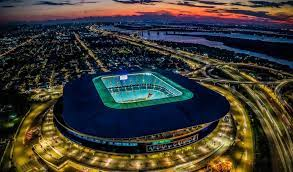

Grêmio anuncia reforma no estádio
O Grêmio anunciou planos para uma grande reforma no estádio, com o objetivo de proporcionar uma experiência ainda melhor para os torcedores. As melhorias incluirão a modernização das instalações, expansão da capacidade, novas áreas de convivência e entretenimento, além de melhorias na infraestrutura para garantir conforto e segurança durante os jogos e eventos no estádio. A iniciativa reflete o compromisso do Grêmio em oferecer o melhor ambiente possível para sua apaixonada torcida, enquanto busca manter o estádio como um dos mais modernos e acolhedores do país.